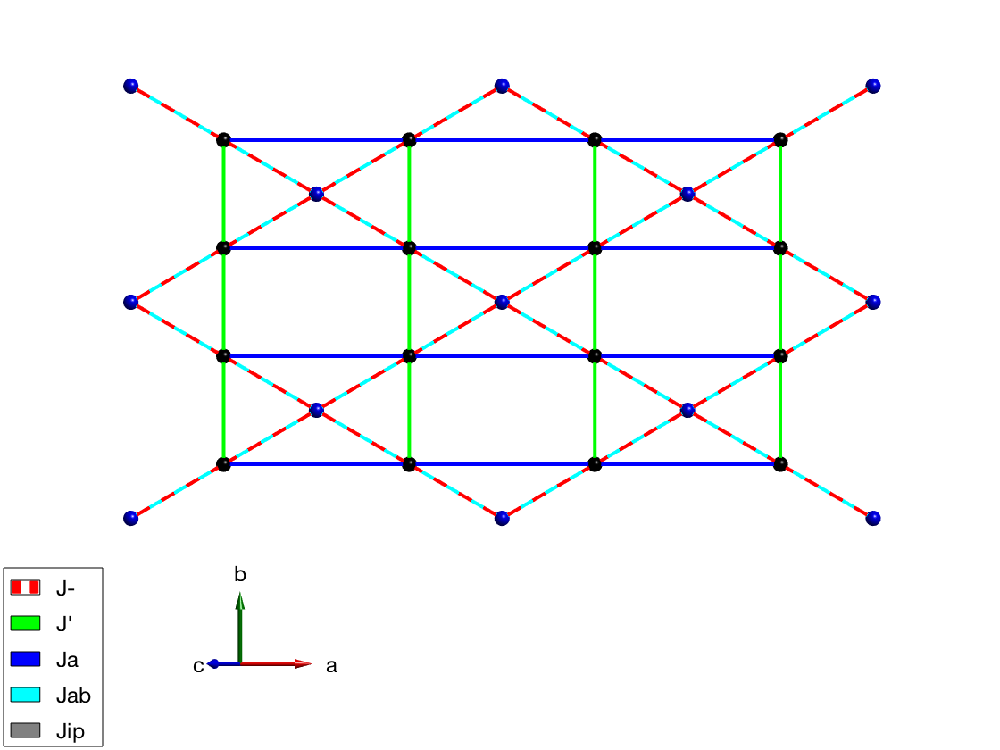
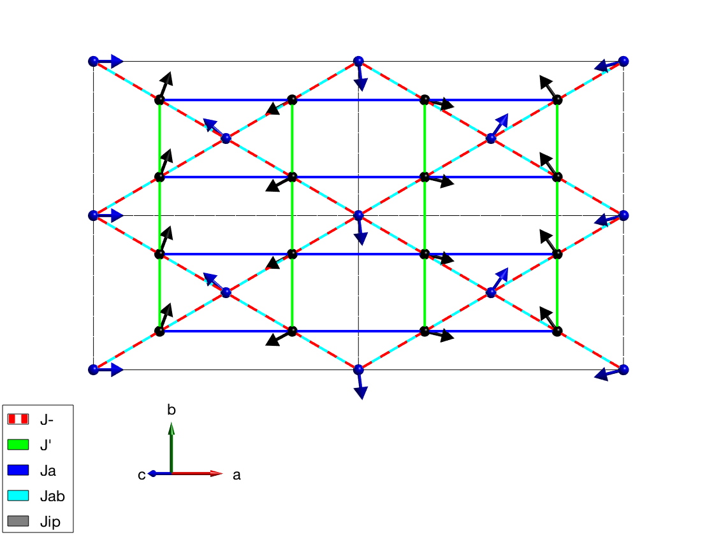
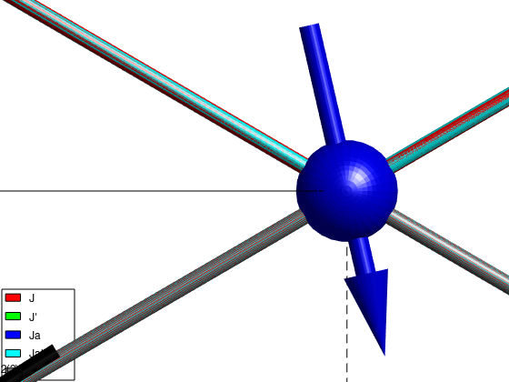
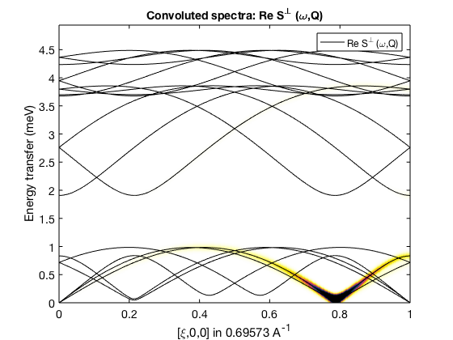
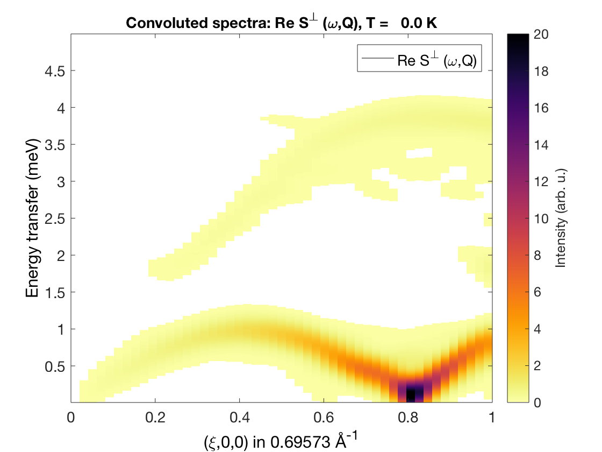
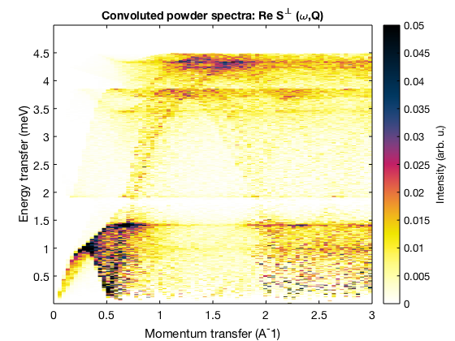

Contents
Defines distorted kagome lattice
This is the calculation used to estimate the spin exchange parameters in KCu3As2O7(OD)3: [1] G. J. Nilsen, et al., PRB 89, 140412 (2014). This section defines the positions of the magnetic moments using the space group operators and the spin Hamiltonian.
J = -2; Jp = -1; Jab = 0.75; Ja = -J/.66 - Jab; Jip = 0.01; hK = sw; hK.fileid(0) hK.genlattice('lat_const',[10.2 5.94 7.81],'angled',[90 117.7 90],'sym','C 2/m') hK.addatom('r',[0 0 0],'S',1/2,'label','MCu2','color','b') hK.addatom('r',[1/4 1/4 0],'S',1/2,'label','MCu2','color','k') hK.gencoupling hK.addmatrix('label','J', 'color','r', 'value',J) hK.addmatrix('label','J''','color','g', 'value',Jp) hK.addmatrix('label','Ja', 'color','b', 'value',Ja) hK.addmatrix('label','Jab','color','cyan','value',Jab) hK.addmatrix('label','Jip','color','gray','value',Jip) hK.addcoupling('J',1) hK.addcoupling('J''',2) hK.addcoupling('Ja',3) hK.addcoupling('Jab',5) hK.addcoupling('Jip',10) hK.plot('range',[2 2 0.3],'zoom',-2)
Magnetic ground
Approximate ground magnetic ground state with a single k-vector: S_i = 2*pi*k*r_i. The magnetic unit cell is defined using the rotating coordinate system.
hK.genmagstr('mode','helical','n',[0 0 1],'S',[1 0 0]','k',[0.77 0 0.115],'next',[1 1 1]); plot(hK,'range',[2 2 0.3],'sSpin',2,'zoom',2) disp('Ground state energy (meV/spin):') hK.energy
Ground state energy (meV/spin): ans = -0.7828
Optimised ground state
To determine the exact ordering wave vector, the magnetic structure is optimised using non-linear optimisation algorithm and assuming planar magnetic structure. From the optimal ordering wave vector the exact spin directions are created.
optpar.func = @gm_planar; optpar.nRun = 5; optpar.xmin = [ zeros(1,6), 0.5 0 0.0, 0 0]; optpar.xmax = [2*pi*ones(1,6), 1.0 0 0.5, 0 0]; magoptOut = hK.optmagstr(optpar); kOpt = hK.mag_str.k; hK.genmagstr('mode','helical','n',[0 0 1],'S',[1 0 0]','k',kOpt,'next',[1 1 1]); plot(hK,'range',[2 2 0.3],'sSpin',2) disp('Ground state energy (meV/spin):') hK.energy
Ground state energy (meV/spin): ans = -0.7834
Spin wave dispersion
We calculate the spin wave dispersion and spin-spin correlation function S(Q,omega) and plot S^perp that gives the neutron scattering cross section.
hK.fileid(1)
hkSpec = hK.spinwave({[0 0 0] [1 0 0] 500});
hkSpec = sw_neutron(hkSpec);
hkSpec = sw_egrid(hkSpec,'Evect',linspace(0,5,500));
figure
sw_plotspec(hkSpec,'mode','pretty','linestyle','-');
caxis([0 20])
Calculating INCOMMENSURATE spin wave spectra (nMagExt = 6, nHkl = 1500, nTwin = 1)... Finished in 0.0 min. Warning: To make the Hamiltonian positive definite, a small omega_tol value was added to its diagonal!
Test dispersion on commensurate cell
We recalculate the dispersion on a superlattice, that should give the same S(Q,omega), but it is much slower. We approximate the ordering k-vector within 0.05 rlu using the rat() built-in Matlab function. We create the magnetic superlattice and then define the k-vector as zero. In this case the sw.spinwave() function will be run in commensurate mode.
[~,nSuperlat] = rat(hK.mag_str.k,0.05); hK.genmagstr('mode','helical','next',nSuperlat) hK.mag_str.k = [0 0 0]; hkSpec = hK.spinwave({[0 0 0] [1 0 0] 50},'Hermit',false); hK.fileid(0) hkSpec = sw_neutron(hkSpec,'pol',false); hkSpec = sw_egrid(hkSpec,'Evect',linspace(0,5,500)); figure sw_plotspec(hkSpec,'mode','color','axlim',[0 20],'dE',0.3);
Warning: In the extended unit cell k is still larger than epsilon! Calculating COMMENSURATE spin wave spectra (nMagExt = 270, nHkl = 50, nTwin = 1)... To optimise memory allocation, Q is cut into 24 pieces! Finished in 0.9 min.
Powder averaged spectrum
We calculate the powder spectrum on the smaller unit cell between Q = 0 - 3 Angstrom^-1.
hK.genmagstr('mode','helical','n',[0 0 1],'S',[1 0 0]','k',kOpt,'next',[1 1 1]); powSpec = hK.powspec(linspace(0,3,80),'nrand',500,'Evect',linspace(0,5,500)); figure; sw_plotspec(powSpec,'dE',0.01,'axlim',[0 0.3])
Written by Gøran Nilsen and Sandor Toth 27-June-2014